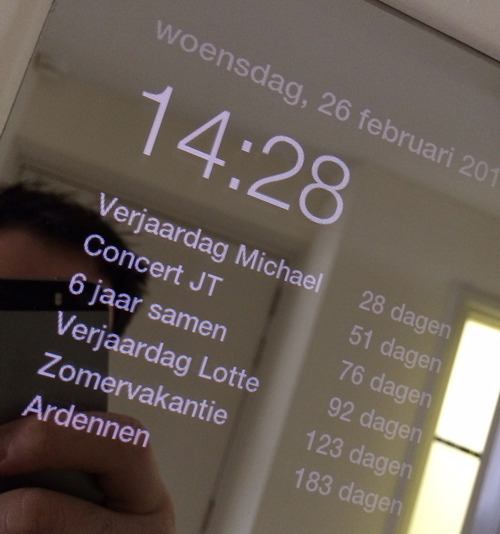

This is an old post from 2014. As such, it might not be relevant anymore.

This guy could be on to something.
There is a definite huge gap in the market for a quick and easy way to see what’s going on whilst you get ready, without having to look at your phone and then get distracted on Facebook, Clash of Clans, or an email.
The question is: is this that useful? And by that, I mean sure, the weather is quite important… but is it really? I can tell you roughly what the weather will be by the month of the year; December will be cold, take a coat, July will be warm, rock a tee with shorts. The time… sure, but there’s your watch and your phone to tell you that instantly. News stories… you’re there to get ready, not know that Apple have just announced a new MacBook. The one area this interests me is with your calendar; showing you a schedule of what’s happening is really cool and one where you might have forgotten to do something.
I would imagine this is an in-between phase. The ideal solution would be something you can talk and interact with, without having to “look” at it. Kind of like Google Now, how you can say “OK, Google, what will the weather be like today” and it responds accordingly. Think Star Trek, or Galaxy Quest, with a computer ready to fetch and dictate information. Making it extensible would be awesome, imagine saying “Ok, Google, what’s my day like?” and it responds with:
Hi Chris, you have a meeting with Steve this morning in Bath. Traffic is pretty heavy so you’ll need to leave in 20 minutes to get there on time. Don’t forget to take an umbrella and coat, it’s likely to rain and will have a high of 16 degrees. It’s your mum’s birthday today, grab some flowers on the way home.
Like the PC, there’ll be one of these in every home in 20 years time. Now, where’s my chequebook, I need to invest in something…